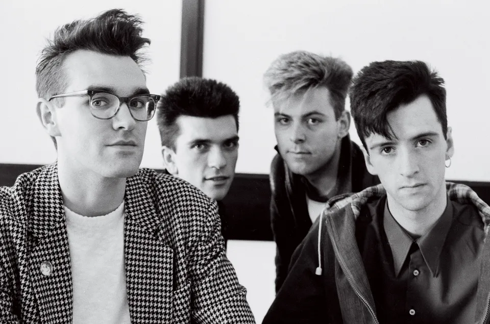

The Origins
Steven Patrick Morrissey
Johnny Marr
Andy Rourke
Mike Joyce
The Smiths were an English rock band formed in Manchester in 1982. The band consisted of vocalist Morrissey, guitarist Johnny Marr, bassist Andy Rourke and drummer Mike Joyce. Critics have called them the most important alternative rock band to emerge from the British independent music scene of the 1980s.
The band picked their name in part as a reaction against those used by synthpop bands of the early 1980s, such as Orchestral Manoeuvres in the Dark and Spandau Ballet, which they considered pretentious. In a 1984 interview Morrissey said that he chose The Smiths "because it was the most ordinary name" and because he thought that it was "time that the ordinary folk of the world showed their faces."
Influences
Morrissey's songwriting was influenced by punk rock and post-punk bands such as:
- New York Dolls
- The Cramps
- The Specials
- The Cult
Along with 1960s girl groups and singers such as:
- Dusty Springfield
- Sandie Shaw
- Marianne Faithfull
- Timi Yuro
Style
 Their catalog is crammed with astonishing songs (and very, very few duds) and while their records cleverly cherry-picked from the past, they were like no records that had ever been made before. The music was terrifically concise, but somehow simultaneously fierce and delicate, and Johnny Marr's guitar lines threw off melodies in every direction, as though he had so many at his fingertips that he could never run short. And as for those lyrics—thoughtful, poetic, brusque, funny, oblique, and heartfelt—each delivered with a kind of swooning, delirious over-committal…it was as though someone had just discovered a higher standard for what a pop song should be, and only the Smiths had been told. Theirs was a rare magic, and they clearly knew it
Click here to listen to The Smiths songs on Spotify!
Click here to explore band's Youtube channel!
Go back to the top of page and take a look at The Smiths once again!